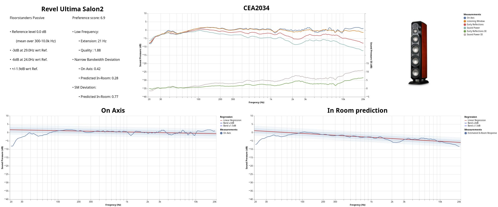

- Revel Ultima Salon2 Type: passive Shape: floorstanders Cost: ±CHF (pair).
- -3dB (resp. -6db) point v.s. reference is at 52.0Hz (resp. 27.0Hz). Reference level is 0.0dB computed over [300Hz, 10000Hz]. Frequency deviation is 2.5dB over the same frequency range.
- Preference Score is 6.4 and would be 6.8 with a perfect subwoofer. Score compononent details: NBD: ON 0.5, LW 0.4, SP 0.36, PIR 0.32; SM: SP0.86, PIR0.81; LFQ 1.53, LFX 23Hz
- CEA2034
-

- On Axis
-

- Estimated In-Room Response
